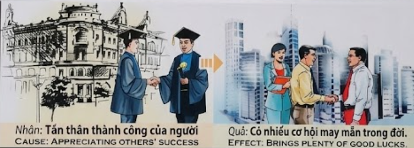

El Eco del Triunfo AjenoThe Echo of Others' TriumphL'Eco del Trionfo Altrui他人胜利的回响صدى نجاح الآخرينЭхо чужого триумфаDas Echo des fremden TriumphesL'Écho du Triomphe d'Autrui他者の勝利の残響O Eco do Triunfo AlheioTiếng Vang Của Thành Công Người Khác
Quien celebra la cima del compañero con corazón sincero, despeja para sus propios pies el camino de la fortuna.He who celebrates his companion's peak with a sincere heart clears the path of fortune for his own feet.Chi celebra la vetta del compagno con cuore sincero sgombra il cammino della fortuna per i propri piedi.用真诚的心庆祝伙伴的巅峰的人，是在为自己的双脚清理财富之路。من يحتفل بذروة رفيقه بقلب صادق يمهد طريق الحظ لقدميه.Тот, кто искренним сердцем празднует вершину товарища, расчищает путь удачи для собственных ног.Wer den Gipfel seines Gefährten mit aufrichtigem Herzen feiert, ebnet den Weg des Glücks für seine eigenen Füße.Celui qui célèbre le sommet de son compagnon avec un cœur sincère dégage le chemin de la fortune pour ses propres pieds.真心を持って仲間の成功を祝う者は、自らの足元の幸運への道を切り開くことになります。Quem celebra o auge do companheiro com o coração sincero limpa o caminho da fortuna para os seus próprios pés.Kẻ biết thật lòng chúc phúc cho đỉnh cao của người khác là đang tự tay khơi thông con đường tài lộc cho chính bước chân mình.
La alegría por el éxito ajeno es una de las virtudes más elevadas y difíciles de cultivar, ya que requiere erradicar la semilla de la envidia. En la ley del karma, cuando nos regocijamos sinceramente por los logros de los demás, estamos afirmando al universo que el éxito es algo bueno y deseable. Este sentimiento de gratitud y admiración actúa como un imán potente. Al no poner resistencia al bienestar de otros, abrimos las compuertas para que la suerte y los beneficios fluyan también hacia nuestra propia vida.
La envidia bloquea el flujo de la abundancia, mientras que el reconocimiento generoso lo acelera. Quien aplaude el triunfo de su prójimo está plantando semillas de "buena suerte". El universo responde a esta pureza de corazón multiplicando las oportunidades y encuentros fortuitos. La prosperidad no es un recurso limitado; es una energía que se expande cuando se comparte el júbilo. Aquellos que celebran las victorias de los demás descubren que la vida comienza a conspirar a su favor, entregándoles llaves para puertas que antes parecían cerradas.
Joy for the success of others is one of the highest and most difficult virtues to cultivate, as it requires eradiating the seed of envy. In the law of karma, when we sincerely rejoice in the achievements of others, we are affirming to the universe that success is something good and desirable. This feeling of gratitude and admiration acts as a powerful magnet. By not putting up resistance to the well-being of others, we open the floodgates for luck and benefits to flow into our own lives as well.
Envy blocks the flow of abundance, while generous recognition accelerates it. He who applauds the triumph of his neighbor is planting seeds of "good luck." The universe responds to this purity of heart by multiplying opportunities and fortuitous encounters. Prosperity is not a limited resource; it is an energy that expands when joy is shared. Those who celebrate the victories of others discover that life begins to conspire in their favor, giving them keys to doors that previously seemed closed.
La gioia para il successo altrui è una delle virtù più elevate e difficili da coltivare, poiché richiede di sradicare il seme dell'invidia. Nella legge del karma, quando ci rallegriamo sinceramente para i successi degli altri, stiamo affermando all'universo que il successo è qualcosa di buono e desiderabile. Questo sentimento di gratitudine e ammirazione agisce come un potente magnete. Non opponendo resistenza al benessere degli altri, apriamo le porte affinché la fortuna e i benefici fluiscano anche nella nostra vita.
L'invidia blocca il flusso dell'abbondanza, mentre il riconoscimento generoso lo accelera. Chi applaude il trionfo del prossimo sta piantando semi di "buona fortuna". L'universo risponde a questa purezza di cuore moltiplicando le opportunità e gli incontri fortuiti. La prosperità non è una risorsa limitata; è un'energia que si espande quando si condivide il giubilo. Coloro que celebrano le vittorie degli altri scoprono que la vita inizia a cospirare a loro favore, consegnando loro le chiavi para porte que prima sembravano chiuse.
为他人的成功感到高兴是最高尚也是最难培养的德行之一，因为它需要铲除嫉妒的种子。在业力法则中，当我们由衷地为他人的成就而欢欣鼓舞时，我们就是在向宇宙确认，成功是一件好事，是值得向往的。这种感激和钦佩的情感就像一块强大的磁铁。通过不对他人的福祉产生抗拒，我们为好运和利益流向我们自己的生活打开了闸门。
嫉妒阻碍了富足的流动，而慷慨的认可能够加速它。那些为邻居的胜利鼓掌的人正在播下“好运”的种子。宇宙通过成倍增加机会和偶然相遇来回应这种心灵的纯洁。繁荣不是有限的资源；它是一种在分享喜悦时不断扩展的能量。那些庆祝他人胜利的人发现，生活开始向有利于他们的方向发展，给了他们开启以前似乎关闭的大门的钥匙。
الفرح لنجاح الآخرين هو أحد أسمى الفضائل وأصعبها تهذيباً، فهو يتطلب استئصال بذور الحسد. في قانون الكارما، عندما نفرح بصدق لإنجازات الآخرين، فإننا نؤكد للكون أن النجاح شيء جيد ومرغوب فيه. يعمل هذا الشعور بالامتنان والإعجاب كمغناطيس قوي. من خلال عدم إبداء مقاومة لرفاهية الآخرين، نفتح الأبواب لتدفق الحظ والفوائد إلى حياتنا الخاصة أيضاً.
الحسد يعيق تدفق الوفرة، بينما التعرف الكريم يسرعه. من يصفق لانتصار قريبه يزرع بذور 'الحظ السعيد'. يستجيب الكون لهذا النقاء في القلب بمضاعفة الفرص واللقاءات العرضية. الرخاء ليس مورداً محدوداً؛ إنه طاقة تتوسع عندما يتم مشاركة الابتهاج. يكتشف أولئك الذين يحتفلون بانتصارات الآخرين أن الحياة بدأت تتآمر لصالحهم، مما يمنحهم مفاتيح لأبواب كانت تبدو مغلقة في السابق.
Радость за успех другого — одна из высших и трудновоспитуемых добродетелей, так как она требует искоренения семени зависти. В законе кармы, когда мы искренне радуемся достижениям окружающих, мы подтверждаем вселенной, что успех — это нечто благое и желанное. Это чувство благодарности и восхищения действует как мощный магнит. Не сопротивляясь благополучию других, мы открываем шлюзы для того, чтобы удача и блага потекли и в нашу собственную жизнь.
Зависть блокирует поток изобилия, в то время как щедрое признание ускоряет его. Тот, кто аплодирует триумфу ближнего, сажает семена «удачи». Вселенная отвечает на эту чистоту сердца, приумножая возможности и случайные встречи. Процветание — это не ограниченный ресурс; это энергия, которая расширяется, когда мы разделяем ликование. Те, кто празднует победы других, обнаруживают, что жизнь начинает подыгрывать им, вручая ключи от дверей, которые раньше казались закрытыми.
Die Mitfreude am Erfolg anderer ist eine der höchsten und am schwersten zu kultivierenden Tugenden, da sie die Ausrottung des Samens des Neides erfordert. Im Gesetz des Karmas bekräftigen wir gegenüber dem Universum, dass Erfolg etwas Gutes und Wünschenswertes ist, wenn wir uns aufrichtig über die Leistungen anderer freuen. Dieses Gefühl der Dankbarkeit und Bewunderung wirkt wie ein starker Magnet. Indem wir uns dem Wohlergehen anderer nicht widersetzen, öffnen wir die Schleusen für Glück und Vorteile, die auch in unser eigenes Leben fließen.
Neid blockiert den Fluss des Überflusses, während großzügige Anerkennung ihn beschleunigt. Wer dem Triumph seines Nächsten applaudiert, sät die Samen des „Glücks“. Das Universum antwortet auf diese Reinheit des Herzens mit der Vervielfältigung von Möglichkeiten und zufälligen Begegnungen. Wohlstand ist keine begrenzte Ressource; er ist eine Energie, die sich ausdehnt, wenn die Freude geteilt wird. Diejenigen, die die Siege anderer feiern, entdecken, dass das Leben beginnt, zu ihren Gunsten zu konspirieren, und ihnen Schlüssel für Türen gibt, die zuvor verschlossen schienen.
La joie pour le succès d'autrui est l'une des vertus les plus élevées et les plus difficiles à cultiver, car elle nécessite d'extirper la graine de l'envie. Dans la loi du karma, lorsque nous nous réjouissons sincèrement des accomplissements des autres, nous affirmons à l'univers que le succès est une chose bonne et désirable. Ce sentiment de gratitude et d'admiration agit comme un aimant puissant. En ne faisant pas de résistance au bien-être des autres, nous ouvrons les vannes pour que la chance et les bénéfices affluent également vers notre propre vie.
L'envie bloque le flux de l'abondance, tandis que la reconnaissance généreuse l'accélère. Celui qui applaudit le triomphe de son prochain plante des graines de « bonne chance ». L'univers répond à cette pureté de cœur en multipliant les opportunités et les rencontres fortuites. La prospérité n'est pas une ressource limitée ; c'est une énergie qui s'étend quand on partage l'allégresse. Ceux qui célèbent les victoires des autres découvrent que la vie commence à conspirer en leur faveur, leur remettant des clés pour des portes qui semblaient auparavant fermées.
他者の成功を喜ぶことは、嫉妬の種を根絶する必要があるため、最も崇高で養うのが難しい徳の一つです。カルマの法則では、他人の達成を心から喜ぶとき、私たちは宇宙に対して、成功は良くて望ましいものであると断言していることになります。この感謝と賞賛の感情は、強力な磁石のように働きます。他人の幸福に抵抗しないことで、幸運と利益が自分自身の人生にも流れ込むように水門を開くのです。
嫉妬は豊かさの流れを遮断しますが、惜しみない賞賛はそれを加速させます。隣人の勝利に拍手を送る人は、「幸運」の種を蒔いています。宇宙はこの心の純粋さに応え、機会や偶然の出会いを倍増させます。繁栄は限られた資源ではありません。喜びが分かち合われるときに拡大するエネルギーなのです。他者の勝利を祝う人々は、人生が自分たちに有利に働き始め、以前は閉ざされていたように見えた扉の鍵を自分が手にしていることに気づくでしょう。
A alegria pelo sucesso alheio é uma das virtudes mais elevadas e difíceis de cultivar, pois exige a erradicação da semente da inveja. Na lei do karma, quando nos regozijamos sinceramente pelas conquistas dos outros, estamos a afirmar ao universo que o sucesso é algo bom e desejável. Este sentimento de gratidão e admiração actua como um íman potente. Ao não opormos resistência ao bem-estar dos outros, abrimos as comportas para que a sorte e os benefícios fluam também para a nossa própria vida.
A inveja bloqueia o fluxo da abundância, enquanto o reconhecimento generoso o acelera. Quem aplaude o triunfo do seu próximo está a plantar sementes de "boa sorte". O universo responde a esta pureza de coração multiplicando as oportunidades e os encontros fortuitos. A prosperidade não é um recurso limitado; é uma energia que se expande quando se partilha o júbilo. Aqueles que celebram as vitórias dos outros descobrem que a vida começa a conspirar a seu favor, entregando-lhes chaves para portas que antes pareciam fechadas.
Hỷ xả trước thành công của người khác là một trong những đức hạnh cao quý và khó tu tập nhất, bởi nó đòi hỏi chúng ta phải nhổ tận gốc hạt giống đố kỵ. Trong luật nhân quả, khi ta thành tâm vui mừng cho thành tựu của người khác, ta đang khẳng định với vũ trụ rằng thành công là một điều tốt đẹp và đáng trân trọng. Cảm xúc biết ơn và ngưỡng mộ này hoạt động như một thỏi nam châm quyền năng. Bằng cách không ngăn trở phúc lành của người khác, chúng ta đang mở toang cánh cửa để may mắn và lợi lạc chảy tràn vào chính cuộc đời mình.
Sự đố kỵ ngăn chặn dòng chảy của phúc lộc, trong khi sự công nhận hào hiệp lại thúc đẩy nó. Kẻ biết vỗ tay tán thưởng vinh quang của người khác chính là đang gieo mầm 'vận may'. Vũ trụ đáp lại sự thuần khiết này bằng cách nhân lên những cơ hội và những cuộc hội ngộ tốt đẹp. Sự thịnh vượng không phải là nguồn lực hữu hạn; nó là một dạng năng lượng bành trướng khi niềm vui được sẻ chia. Những ai biết tán thán chiến thắng của người khác sẽ thấy cuộc đời bắt đầu xoay chuyển theo hướng có lợi cho mình, trao cho họ chìa khóa của những cánh cửa mà trước đây tưởng chừng đã khép lại.
El Telar de Luz
The Loom of Light
Il Telaio di Luce
光之织机
نول الضوء
Ткацкий станок света
Der Webstuhl des Lichts
Le Métier à Tisser de Lumière
光の織機
O Tear de Luz
Khung Cửi Ánh Sáng
En una ciudad famosa por sus tapices, vivían dos tejedores: Mateo y Lucas. Cuando Lucas fue elegido para tejer la capa del Rey, Mateo sintió un orgullo inmenso. Organizó una fiesta y dijo: "¡Nadie entrelaza los hilos como Lucas!". Cada vez que Lucas terminaba una obra, Mateo era el primero en admirarla.
Un día, un viajero entró en el taller de Mateo. "He recorrido mil talleres, pero en ninguno encontré esta paz. He oído cómo hablas de tu compañero Lucas, y alguien con un corazón tan noble solo puede crear belleza". El viajero era el Gran Visir, quien contrató a Mateo.
Mateo preguntó: "¿Por qué yo?". El Visir respondió: "Porque la suerte solo entra en las casas donde el éxito de los demás es bienvenido como si fuera propio".
In a city famous for its tapestries lived two weavers: Mateo and Lucas. When Lucas was chosen to weave the King's cloak, Mateo felt immense pride. He threw a party and said: "Nobody intertwines threads like Lucas!". Every time Lucas finished a work, Mateo was the first to admire it.
One day, a traveler entered Mateo's workshop. "I have visited a thousand workshops, but in none did I find this peace. I have heard how you speak of your companion Lucas, and someone with such a noble heart can only create beauty." The traveler was the Grand Vizier, who hired Mateo.
Mateo asked: "Why me?". The Vizier replied: "Because luck only enters houses where others' success is welcomed as if it were one's own."
In una città famosa para i suoi arazzi vivevano due tessitori: Mateo e Lucas. Quando Lucas fu scelto para tessere il mantello del Re, Mateo provò un immenso orgoglio. Organizzò una festa e disse: "Nessuno intreccia i fili come Lucas!". Ogni volta que Lucas finiva un'opera, Mateo era il primo ad ammirarla.
Un giorno, un viaggiatore entrò nel laboratorio di Mateo. "Ho visitato mille laboratori, ma in nessuno ho trovato questa pace. Ho sentito come parli del tuo compagno Lucas, e qualcuno con un cuore così nobile può solo creare bellezza". Il viaggiatore era il Gran Visir, que assunse Mateo.
Mateo chiese: "Perché io?". Il Visir rispose: "Perché la fortuna entra solo nelle case dove il successo degli altri è accolto come se fosse proprio".
在以挂毯闻名的城市里住着两名织工：Mateo 和 Lucas。当 Lucas 被选为国王编织披风时，Mateo 感到非常自豪。他举办了一场派对并说：“没有人能像 Lucas 那样编织！”每次 Lucas 完成一件作品，Mateo 总是第一个赞美它。
一天，一位旅行者走进 Mateo 的作坊。“我走访了一千个作坊，但没有一个能让我感到这种宁静。我听到了你如何评价你的伙伴 Lucas，一个拥有如此高尚心灵的人只能创造美。”这位旅行者是位大维齐尔，他雇佣了 Mateo。
Mateo 问：“为什么是我？”维齐尔回答说：“因为幸运只会进入那些把他人的成功当成自己的成功来欢迎的家庭。”
في مدينة مشهورة بمفروشاتها، عاش نساجان: ماتيو ولوكاس. عندما تم اختيار لوكاس لنسج عباءة الملك، شعر ماتيو بفخر عظيم. أقام حفلة وقال: 'لا أحد ينسج الخيوط مثل لوكاس!'. وفي كل مرة ينهي فيها لوكاس عملاً، كان ماتيو أول من يعجب به.
في أحد الأيام، دخل مسافر إلى ورشة ماتيو. 'لقد زرت ألف ورشة، لكنني لم أجد هذا السلام في أي منها. لقد سمعت كيف تتحدث عن زميلك لوكاس، ومن لديه مثل هذا القلب النبيل لا يمكنه إلا أن يبدع الجمال'. كان المسافر هو الوزير الأعظم، الذي وظف ماتيو.
سأل ماتيو: 'لماذا أنا؟'. فأجاب الوزير: 'لأن الحظ يدخل فقط البيوت التي يُرحب فيها بنجاح الآخرين كما لو كان نجاح المرء نفسه'.
В городе, знаменитом своими гобеленами, жили два ткача: Матео и Лукас. Когда Лукаса выбрали ткать плащ для короля, Матео почувствовал огромную гордость. Он устроил праздник и сказал: «Никто не переплетает нити так, как Лукас!». Каждый раз, когда Лукас заканчивал работу, Матео первым восхищался ею.
Однажды в мастерскую Матео зашел путешественник. «Я посетил тысячу мастерских, но ни в одной не нашел такого покоя. Я слышал, как ты отзываешься о своем товарище Лукасе, а человек с таким благородным сердцем может создавать только красоту». Путешественник оказался великим визирем, который нанял Матео.
Матео спросил: «Почему я?». Визирь ответил: «Потому что удача входит только в те дома, где чужому успеху радуются как своему собственному».
In einer Stadt, die für ihre Wandteppiche berühmt war, lebten zwei Weber: Mateo und Lucas. Als Lucas ausgewählt wurde, den Mantel des Königs zu weben, empfand Mateo großen Stolz. Er gab ein Fest und sagte: „Niemand verwebt die Fäden so wie Lucas!“ Jedes Mal, wenn Lucas ein Werk vollendete, war Mateo der Erste, der es bewunderte.
Eines Tages betrat ein Reisender Mateos Werkstatt. „Ich habe tausend Werkstätten besucht, aber in keiner habe ich diesen Frieden gefunden. Ich habe gehört, wie du über deinen Gefährten Lucas sprichst, und jemand mit einem so edlen Herzen kann nur Schönheit erschaffen.“ Der Reisende war der Großwesir, der Mateo einstellte.
Mateo fragte: „Warum ich?“. Der Wesir antwortete: „Weil das Glück nur in Häuser einkehrt, in denen der Erfolg anderer wie der eigene willkommen geheißen wird.“
Dans une ville célèbre pour ses tapisseries vivaient deux tisserands : Mateo et Lucas. Lorsque Lucas fut choisi pour tisser la cape du Roi, Mateo ressentit une immense fierté. Il organisa une fête et dit : « Personne n'entrelace les fils comme Lucas ! ». Chaque fois que Lucas terminait une œuvre, Mateo était le premier à l'admirer.
Un jour, un voyageur entra dans l'atelier de Mateo. « J'ai visité mille ateliers, mais dans aucun je n'ai trouvé cette paix. J'ai entendu comment tu parles de ton compagnon Lucas, et quelqu'un au cœur si noble ne peut que créer de la beauté ». Le voyageur était le Grand Vizir, qui embaucha Mateo.
Mateo demanda : « Pourquoi moi ? ». Le Vizir répondit : « Parce que la chance n'entre que dans les maisons où le succès des autres est accueilli comme si c'était le sien ».
タペストリーで有名なある街に、マテオとルーカスという二人の織り手が住んでいました。ルーカスが王の心強いマントを織るために選ばれたとき、マテオは大きな誇りを感じました。彼はパーティーを開き、「ルーカスのように糸を紡げる者は他にいない！」と言いました。ルーカスが作品を完成させるたびに、マテオは誰よりも先にそれを称賛しました。
ある日、一人の旅人がマテオの工房にやってきました。「千もの工房を訪ねてきたが、これほど平和な場所はなかった。君が仲間のルーカスをどう話しているかを聞いたが、これほど高潔な心を持つ者こそ、美を生み出せるのだ」。その旅人は大宰相であり、マテオを雇うことにしました。
マテオは尋ねました。「なぜ私なのですか？」。宰相は答えました。「幸運というものは、他人の成功を自分のことのように喜べる家にしか宿らないものだからだ」。
Numa cidade famosa pelas suas tapeçarias viviam dois tecelões: Mateo e Lucas. Quando Lucas foi escolhido para tecer a capa do Rei, Mateo sentiu um orgulho imenso. Organizou uma festa e disse: "Ninguém entrelaça os fios como o Lucas!". Cada vez que Lucas terminava uma obra, Mateo era o primeiro a admirá-la.
Um dia, um viajante entrou na oficina de Mateo. "Percorri mil oficinas, mas em nenhuma encontrei esta paz. Ouvi como falas do teu companheiro Lucas, e alguém com um coração tão nobre só pode criar beleza". O viajante era o Grão-Vizir, que contratou Mateo.
Mateo perguntou: "Porquê eu?". O Vizir respondeu: "Porque a sorte só entra nas casas onde o sucesso dos outros é bem-vindo como se fosse próprio".
Tại một thành phố nổi tiếng với những tấm thảm dệt, có hai người thợ tên là Mateo và Lucas. Khi Lucas được chọn để dệt áo choàng cho Đức Vua, Mateo cảm thấy vô cùng tự hào. Anh tổ chức một bữa tiệc và nói: 'Không ai có thể đan dệt những sợi tơ khéo léo như Lucas!'. Mỗi khi Lucas hoàn thành một kiệt tác, Mateo luôn là người đầu tiên đến chiêm ngưỡng và tán thưởng.
Một ngày nọ, một vị lữ khách bước vào xưởng của Mateo. 'Ta đã đi qua ngàn vạn xưởng dệt, nhưng chẳng nơi nào ta tìm thấy sự bình yên như ở đây. Ta đã nghe cách ngươi nói về cộng sự Lucas, và một kẻ có trái tim cao thượng như vậy chắc chắn sẽ tạo ra được cái đẹp'. Vị lữ khách đó chính là Đại Tể Tướng, và ông đã mời Mateo về làm việc cho mình.
Mateo thắc mắc: 'Tại sao lại là tôi?'. Tể tướng đáp: 'Bởi lẽ, vận may chỉ mỉm cười với những ai biết đón nhận thành công của người khác như thể đó chính là thành công của chính mình'.
La Inspiración Original
The Original Inspiration
Nguồn cảm hứng ban đầu
La historia que hemos relatado en este capítulo está inspirada por el pasaje de la escena original de los murales «Tranh Nhân Quả» (Ilustraciones del Karma) del Templo Linh Ung en Da Nang, capturado en la imagen.
The story we have told in this chapter is inspired by the passage from the original scene of the “Tranh Nhân Quả” (Illustrations of Karma) murals of the Linh Ung Temple in Da Nang, captured in the image.
Câu chuyện chúng tôi kể trong chương này được lấy cảm hứng từ đoạn trích từ cảnh gốc của bức tranh tường “Tranh Nhân Quả” ở chùa Linh Ứng ở Đà Nẵng, được ghi lại trong hình ảnh.

Como se puede apreciar en el pasaje extraído del mural, la causa y su efecto kármico están descritos originalmente en vietnamita y con una breve traducción al inglés. A continuación, te ofrecemos su traducción detallada en los distintos idiomas:
As can be seen in the passage taken from the mural, the cause and its karmic effect are originally described in Vietnamese and with a brief translation into English. Below, we offer you its detailed translation in the different languages:
🇻🇳 Tiếng Việt:
Nhân: Tán thán thành công của người.
Quả: Có nhiều cơ hội may mắn trong đời.
🇬🇧 English:
Cause: Appreciating others' success.
Effect: Brings plenty of good lucks.
Traducción Recreada:
Causa: Alegrarse y apreciar sinceramente el éxito ajeno.
Efecto: Trae abundantes oportunidades y buena suerte en la vida.
Recreated Translation:
Cause: Sincerly rejoicing and appreciating others' success.
Effect: Brings abundant opportunities and good luck in life.
Traduzione ricreata:
Causa: Rallegrarsi e apprezzare sinceramente il successo altrui.
Effetto: Porta abbondanti opportunità e buona fortuna nella vita.
重新创建的翻译:
原因：真诚地为他人的成功感到高兴和赞赏。
影响：在生活中带来丰富的机遇和好运。
الترجمة المعاد صياغتها:
السبب: الفرح الصادق بتقدير نجاح الآخرين.
الأثر: يجلب الكثير من الفرص والحظ السعيد في الحياة.
Воссозданный перевод:
Причина: Искренняя радость и признание чужого успеха.
Следствие: Приносит множество возможностей и удачу в жизни.
Neu erstellte Übersetzung:
Ursache: Sich aufrichtig über den Erfolg anderer freuen und ihn schätzen.
Wirkung: Bringt reichlich Gelegenheiten und viel Glück im Leben.
Traduction recréée:
Cause : Se réjouir et apprécier sincèrement le succès d'autrui.
Effet : Apporte d'abondantes opportunités et de la chance dans la vie.
再作成された翻訳:
原因：他者の成功を心から喜び、称賛すること。
影響：人生において豊かな機会と幸運をもたらします。
Tradução recriada:
Causa: Alegrar-se e apreciar sinceramente o sucesso alheio.
Efeito: Traz abundantes oportunidades e boa sorte na vida.